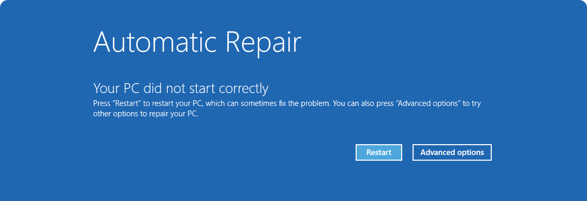
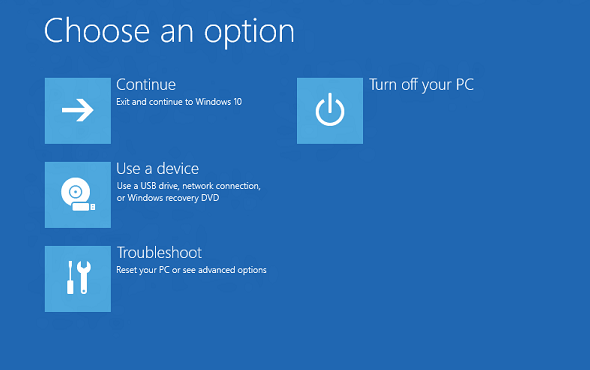

Blue Screen or Unexpected Restart
4 Use Windows recovery or get help.
If crashes repeat, use Windows Recovery options such as Startup Repair when offered. If the computer contains critical files, seek help before resetting Windows.


What to check:
- Follow on-screen recovery instructions carefully.
- Record recurring stop codes.
- Seek professional help if Windows cannot start or hardware symptoms appear.